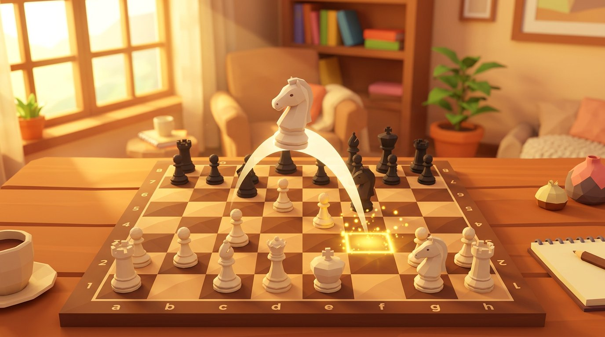
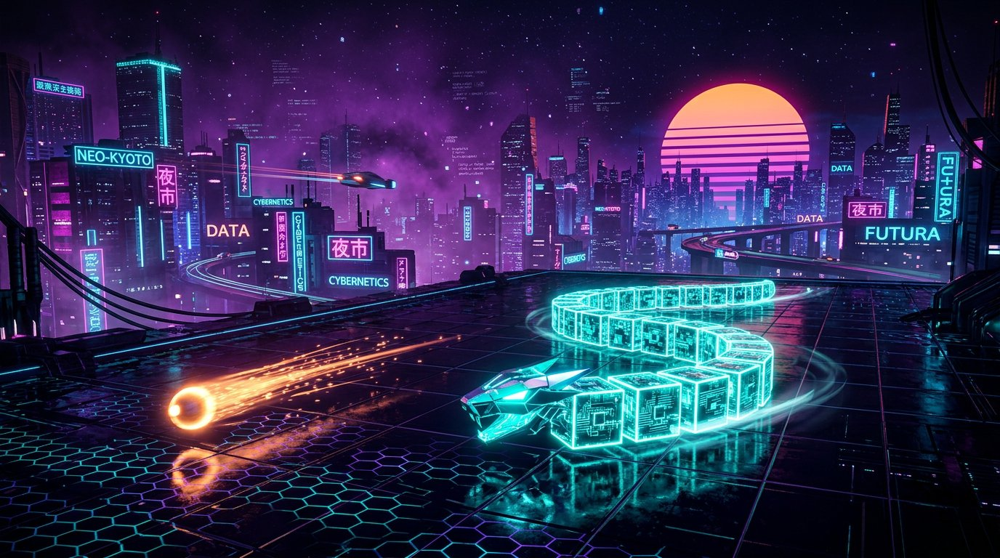
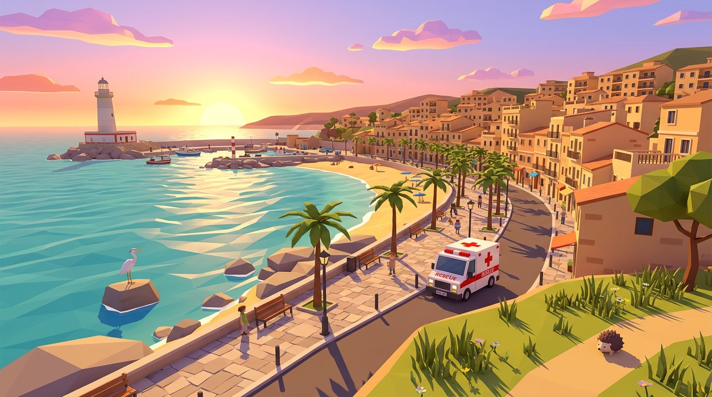

JUEGOS 3D GRATIS EN EL NAVEGADOR — IMPULSADOS POR WEBGL
GALERÍA DE
JUEGOS 3D
JUEGOS THREE.JS PARA NAVEGADOR
Bienvenido al salón recreativo de juegos 3D gratuitos para navegador hechos con Three.js.
Sin instalar nada. En el móvil o en el PC: abre el enlace y empieza a jugar.
DESPLÁZATE
JUEGO 01 AJEDREZ 3D
AJEDREZ 3DEl clásico tablero en 3D
El ajedrez clásico pasa a 3D: piezas con detalle y textura, movimientos animados en trayectoria curva y efectos al capturar. Juega contra la CPU en tres niveles de dificultad (fácil, medio y avanzado) o contra otra persona en el mismo navegador, y reinicia la partida cuando quieras.
- MOTOR
- Three.js r160 (WebGL)
- JUGADORES
- 1–2 jugadores
Jugar→

JUEGO 02 SNAKE NEÓN
CYBER SNAKENanobot Hunter
La serpiente de siempre, hecha neón: traga nanobots para crecer, activa el turbo x3 y, al alcanzar el umbral de crecimiento, desciende a un piso inferior a través de un agujero cuántico. Vista cenital o en primera persona desde la cabeza, récords y un horizonte retro-futurista con brillo bloom.
- MOTOR
- Three.js (WebGL)
- JUGADORES
- 1 jugador · récords
Jugar→

JUEGO 03 RESCATE 3D
GANDIA RESCUERescate y exploración en Gandía
Un juego de conservación y descubrimiento ambientado en Gandía (La Safor): navega por panoramas 360° estilo Street View, responde a avisos de rescate con tu GPS real o explora las zonas virtualmente, decora tu refugio 2.5D y descubre la fauna local en paisajes 3D con ciclo de día y noche. En español, valenciano e inglés.
- MOTOR
- Three.js (WebGL)
- JUGADORES
- 1 jugador · GPS opcional
Rescatar→

JUEGO 04 CONSTRUCCIÓN 3D
MI HOGAR 3DConstruye tu hogar de ensueño
Construye tu hogar de ensueño sobre una parcela en 3D: muros, techos, puertas y muebles con materiales PBR, 24 colores, 44 esquemas de texturas y 16 misiones con recompensas. Alterna el cielo entre día y noche, pinta y cambia las texturas al instante, pasea en primera persona por tu casa y guarda o exporta la creación en el navegador.
- MOTOR
- Three.js r160 (WebGL)
- JUGADORES
- 1 jugador · 16 misiones
Construir→

¿Qué son los juegos Three.js?
Three.js es una biblioteca de JavaScript para dibujar gráficos 3D en el navegador. Permite construir escenas 3D con muchísimo menos código que escribiendo WebGL directamente, y se usa en webs interactivas y juegos 3D de todo el mundo. Es software libre con licencia MIT.
Los juegos de navegador hechos con Three.js tienen una ligereza que las apps no tienen. No hay que instalar ni registrarse: el mundo 3D arranca en cuanto se abre la URL. Se juega con el mismo enlace en el móvil y en el PC, y compartirlo con amigos es cuestión de una sola dirección. Esta misma página también está dibujada con Three.js r185.
Todo el código de esta galería (las máquinas recreativas, el recorrido de cámara, el neón y el resplandor) está publicado en GitHub. Si al verla piensas «yo también quiero hacer algo así», es un buen punto de partida.
- JUEGOS
- 4 títulos (todos gratis y 100 % en el navegador)
- COMPATIBLE
- Navegadores principales de móvil, tablet y PC
- CREADO POR
- JUEGOS 3D (Desengany)
Preguntas frecuentes
¿Los juegos de Three.js son gratis?
Sí. Todos los juegos de esta página son gratuitos. No hace falta crear una cuenta ni instalar ninguna app: basta con abrir el enlace para empezar a jugar.
¿Funcionan en el móvil?
Sí. Three.js dibuja el 3D en el navegador mediante WebGL, así que en iPhone y Android se juega con la misma URL que en el PC. Todos los juegos admiten controles táctiles.
¿Se añadirán juegos nuevos?
Sí. Ahora mismo hay varios juegos Three.js en desarrollo. En cuanto se publiquen aparecerán en esta galería.
Quiero aprender a crear juegos con Three.js.
Lo mejor es entender primero la estructura básica (escena, cámara y renderizador) y empezar por pequeños efectos antes de un juego completo. La documentación oficial de Three.js y sus ejemplos son un excelente punto de partida, y el código de esta galería también está publicado en GitHub.